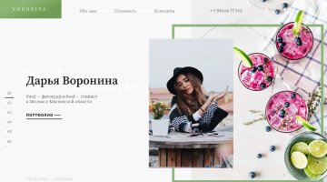
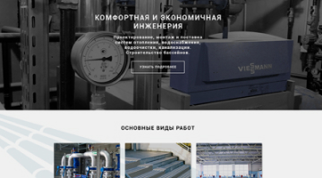
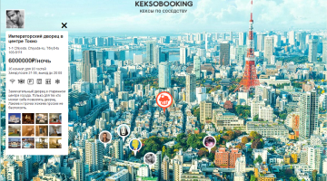

Hello! My name is Artyom. I design and create convenient and modern websites or interfaces.
Something about me

I am frontend developer from Nur-Sultan(Astana), Kazakhstan. Before webdev, I worked for five years as a system administrator and a head of customer service in a large IT company. I got tired of this and decided to radically change my role in life.
I enjoy creating web services, platforms, online stores and simple one page websites. I have been in web development not long ago, but I am very actively working and strive to become the best in my field. I am always looking for more interesting projects.
My skills: HTML5, CSS3, JS, Semantic / responsive / valid / cross-browser layout.
Technologies: Gulp, Sass, Less, Git, BEM, Mobile First.
My works
Interested in the entire frontend spectrum and working on ambitious projects with positive people.






Contact me
Thanks for taking the time to reach out. How can I help you today?